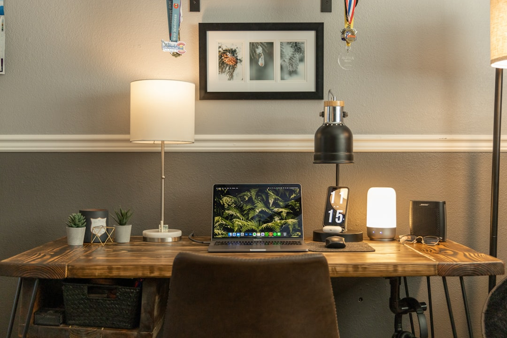
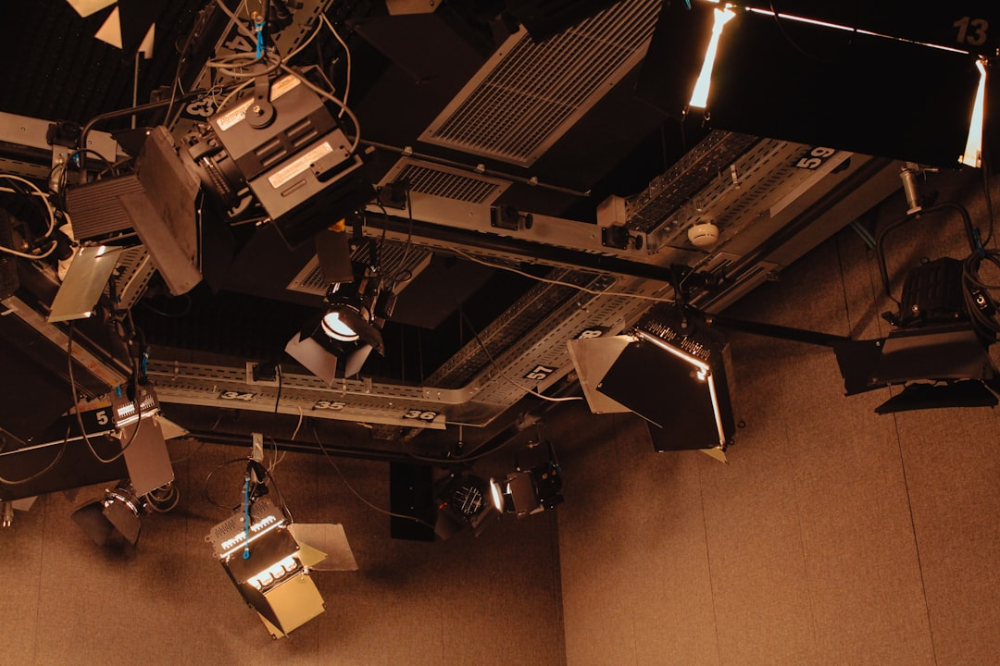

Natural lighting represents the cornerstone of contemporary photography, transforming ordinary moments into extraordinary visual narratives. In the world of studio branding and professional photography, mastering bright, authentic lighting creates the clean aesthetic that defines modern Australian creative work.
At Salt & Frame, we've built our reputation on harnessing the power of natural light to craft images that resonate with authenticity and sophistication. This approach isn't just about technical proficiency—it's about understanding how light interacts with subjects, spaces, and emotions to create compelling visual stories.
Understanding Natural Light Characteristics
Natural lighting possesses unique qualities that artificial sources struggle to replicate. The soft, diffused nature of sunlight filtered through windows or reflected off surfaces creates gentle shadows and highlights that flatter subjects while maintaining detail across the entire frame.

The color temperature of natural light shifts throughout the day, offering diverse creative opportunities. Morning light tends toward cooler blue tones, while afternoon sun brings warmth that complements the coastal-inspired palette we incorporate into our branding work. Understanding these shifts allows photographers to plan sessions around the mood and aesthetic they wish to achieve.
Studio Setup for Optimal Natural Lighting
Creating a studio environment that maximizes natural lighting requires thoughtful design decisions. Large windows facing indirect sunlight provide the most consistent illumination without harsh shadows or blown-out highlights. We position our shooting areas perpendicular to these windows, allowing light to wrap around subjects naturally.
Neutral-toned walls act as natural reflectors, bouncing light throughout the space and maintaining the bright, airy atmosphere that characterizes contemporary Australian aesthetics. This approach eliminates the need for excessive artificial fill lights, preserving the authentic quality that makes natural lighting so appealing.
"The best light doesn't announce itself—it simply reveals the truth of the moment with clarity and grace."
Techniques for Different Times of Day
Each period of daylight offers distinct advantages for specific types of photography. Golden hour—the first hour after sunrise and the last before sunset—provides the warm, flattering light ideal for portraits and lifestyle shoots. This timing aligns perfectly with the coastal-inspired warmth we integrate into our visual branding.
Overcast days offer perhaps the most forgiving natural lighting conditions. Cloud cover acts as a massive softbox, diffusing sunlight evenly and eliminating harsh shadows. This consistent illumination proves perfect for product photography and situations requiring uniform lighting across complex compositions.
Midday sun, often dismissed by photographers, can create striking contemporary aesthetics when used deliberately. Positioning subjects in open shade while using surrounding bright surfaces as reflectors yields clean, bright images with controlled contrast—a hallmark of minimalist design principles.
Modifying Natural Light Effectively
While natural lighting provides an excellent foundation, subtle modifications enhance control without sacrificing authenticity. Reflectors bounce existing light into shadow areas, filling them gently while maintaining the overall natural character. White foam boards or professional reflectors work equally well for this purpose.
Diffusion materials soften intense direct sunlight streaming through windows. Sheer curtains, translucent panels, or specialized scrims transform harsh beams into gentle, flattering illumination that preserves detail in both highlights and shadows. This technique proves essential for maintaining the refined aesthetic our clients expect.
Color Balance and White Balance Considerations
Natural light's shifting color temperature requires careful white balance management. Auto white balance often produces acceptable results, but custom white balance settings based on actual lighting conditions yield more accurate colors that align with brand guidelines.
For our coastal-inspired aesthetic, we often warm the white balance slightly, adding subtle golden undertones that evoke Australia's sun-drenched beaches without appearing overly processed. This approach maintains authenticity while infusing images with the warmth that makes brands feel approachable and genuine.
Working with Window Light
Windows represent the most accessible natural light source for studio photography. Positioning subjects at varying distances and angles relative to windows creates dramatically different moods. Close to the window produces defined shadows with strong directional quality, while moving further away yields softer, more even illumination.
The size of the window relative to the subject affects light quality significantly. Larger windows create softer light because they act as bigger light sources from the subject's perspective. This principle guides our studio design, incorporating expansive windows that flood spaces with gentle, flattering illumination.
Seasonal Considerations in Australian Light
Australia's unique geographical position creates distinctive seasonal lighting patterns that influence our photographic approach. Summer's intense overhead sun requires careful timing and strategic shade usage, while winter's lower sun angle provides extended periods of desirable directional lighting.
Coastal locations experience atmospheric conditions that soften and diffuse light naturally. The moisture in the air near oceans acts as a filter, creating the luminous quality that defines Australian coastal aesthetics. We incorporate these environmental factors into our scheduling and creative decisions.
Combining Natural and Minimal Artificial Lighting
Sometimes natural lighting alone doesn't provide sufficient illumination for specific creative visions. In these situations, we supplement minimally with artificial sources that mimic natural light characteristics. LED panels with adjustable color temperature blend seamlessly with existing natural lighting.
The key lies in using artificial light to enhance rather than overpower natural sources. Fill lights should be subtle, raising shadow values just enough to maintain detail without flattening the dimensional quality that natural lighting provides. This restraint preserves the authentic aesthetic that defines contemporary photography.
"Authenticity in photography comes not from avoiding tools, but from using them so skillfully that they become invisible."
Creating Consistent Brand Aesthetics
For branding projects, consistency across images proves crucial. We establish lighting setups that can be replicated across multiple sessions, ensuring cohesive visual identities. This might involve documenting specific times of day, window positions, and modifier arrangements that produce the desired aesthetic.
Our process includes creating lighting diagrams and reference images that guide future sessions. This systematization ensures clients receive visually consistent materials whether they're shooting product photography, team portraits, or lifestyle content for their brand.

Post-Processing Natural Light Images
The editing phase enhances rather than rescues naturally lit photographs. Our post-processing philosophy emphasizes subtle adjustments that amplify the existing light quality. We refine exposure, balance highlights and shadows, and ensure colors align with the neutral tones and coastal accents that define our aesthetic.
Excessive editing destroys the authentic quality that makes natural lighting valuable. Our approach maintains the organic feel while optimizing technical qualities like sharpness, contrast, and color accuracy. The goal remains presenting reality in its most flattering, honest form.
Practical Tips for Mastering Natural Light
Developing natural lighting expertise requires practice and observation. Study how light moves through your studio throughout the day, noting quality changes and identifying optimal shooting windows. Photograph the same subject at different times to understand how lighting affects mood and atmosphere.
Invest in basic modifiers—reflectors, diffusers, and black flags for subtractive lighting. These tools provide control while preserving natural light characteristics. Learn to see light as your subject sees it by moving your head to their position and observing how illumination falls across planes and textures.
Finally, embrace experimentation. Contemporary photography thrives on pushing boundaries within established principles. The refined typography and clean aesthetics we're known for emerged from countless experiments with how natural lighting interacts with minimalist design elements.
Conclusion
Mastering natural lighting in contemporary photography creates the foundation for authentic, compelling visual storytelling. This approach aligns perfectly with the clean aesthetic, bright atmosphere, and coastal-inspired warmth that defines Australian creative excellence. By understanding light's behavior, modifying it subtly, and maintaining consistency, photographers craft images that resonate with viewers on an emotional level while communicating brand values with clarity.
At Salt & Frame, natural lighting isn't just a technique—it's a philosophy that guides every creative decision. Whether we're developing comprehensive brand identities or capturing individual moments, the bright, authentic quality of natural light remains central to our contemporary aesthetic and visual storytelling approach.
Ready to Create Stunning Naturally Lit Photography?
Let's discuss how contemporary lighting techniques can elevate your brand's visual identity.
Start Your Project